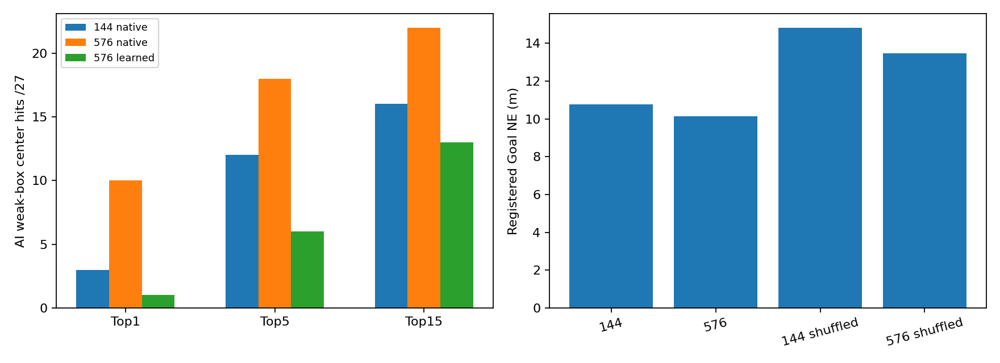
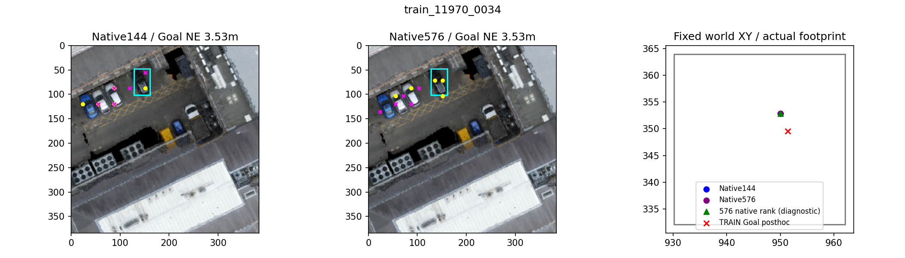
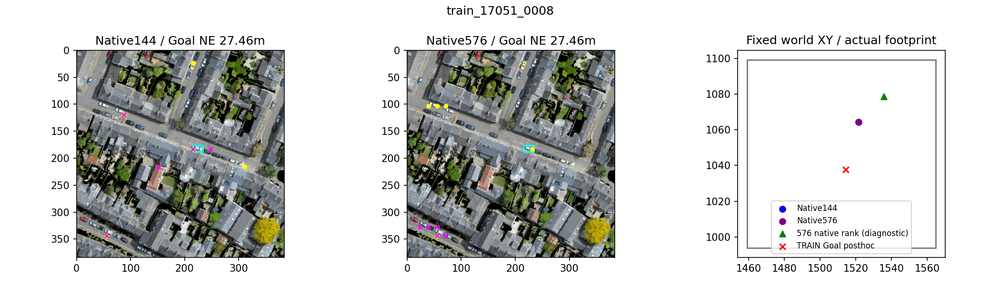
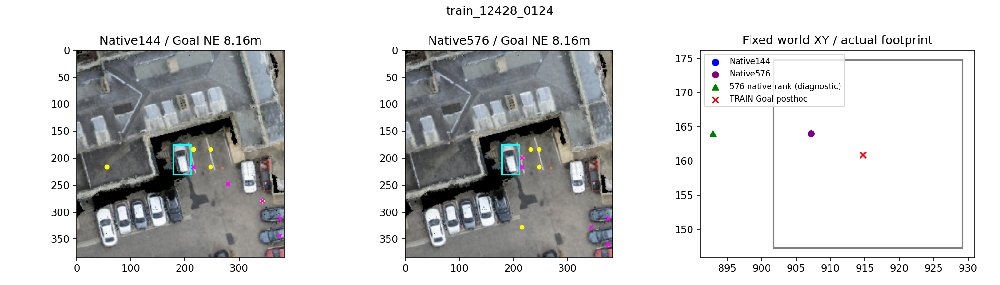
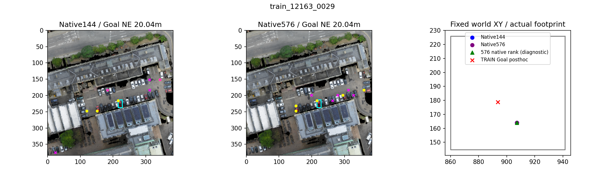

不是像素金标准、真实实例准确率或导航SR。青色框为AI弱外观框；黄点原生相似度Top5，紫点学习评分Top5。
中文报告
A black car in between two empty spaces, in the parking lot between the department of pharmacology and the MRC toxicology unit buildings off Tennis Court Road

A white car is parked in front of a house with grey roof and white wall at the right side of the road named City road. A black car parked in front of it and no car parked behind it.

A white car that is next to two empty parking spots, parked in between the James Dyson building and the Royal Cambridge Hotel, parked in front of the royal Cambridge Hotel on the corner of trumpington Road and the fen Causeway

Between James Dyson Building and Royal Cambridge Hotel, to the left of the white building, this red car is seventh from the right near the James Dyson Building.
